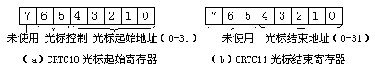

① CRTC10-CRTC11是光标控制寄存器，这两个寄存器用于控制光标的显示特性。寄存器的结构如图6-8所示：
CRTC10=X00XXXXX：不闪烁。X01XXXXX：无光标。
X10XXXXX：光标闪烁频率控制为场频的1/16。
X11XXXXX：光标闪烁频率控制为场频的1/32。

CRTC10的低5位（Bit0-Bit4）用于控制光标的起始线位置，至于其它3个位CGA卡与EGA/VGA的定义不同。对于CGA卡而言，Bit5-Bit6用于控制光标的闪烁情况，Bit7位未使用；而在EGA卡上Bit5-Bit7位都未使用；VGA卡则使用Bit5位控制光标的有无。大家可以自行查阅这方面的资料，在此不再多说。
CRTC11的低5位用于控制光标的终止线位置，它的其余3个位CGA卡未使用，EGA和VGA卡使用Bit5-Bit6两位控制光标的偏移。下面的示例程序演示了通过这两个寄存器控制光标的形状的方法。
C:\ASM\>DEBUG[Enter] -a100[Enter] 0BE2:0100 JMP 115 ；跳过数据区 0BE2:0102 DB 'Press any key...',0d,0a,24 0BE2:0115 MOV DX,0102 0BE2:0118 MOV AH,09 ；显示字符串"Press any key..." 0BE2:011A INT 21 0BE2:011C MOV CX,0F0F 0BE2:011F MOV DX,03D4 ；起始线、终止线装入CH、CL寄存器 0BE2:0122 MOV AL,0A ；DX指向索引寄存器 0BE2:0124 OUT DX,AL ；选择CRTC10寄存器 0BE2:0125 INC DX ；输出索引号 0BE2:0126 MOV AL,CH ；DX指向数据寄存器 0BE2:0128 OUT DX,AL ；取得起始线 0BE2:0129 DEC DX ；输出起始地址至CRTC10 0BE2:012A MOV AL,0B ；DX指向索引寄存器 0BE2:012C OUT DX,AL ；选择CRTC11寄存器 0BE2:012D INC DX ；输出索引号 0BE2:012E MOV AL,CL ；DX指向数据寄存器 0BE2:0130 OUT DX,AL ；取得终止线 0BE2:0131 MOV AH,00 ；输出终止地址至CRTC11 0BE2:0133 INT 16 ；等待键盘输入 0BE2:0135 DEC CH 0BE2:0137 JNZ 011F ；光标起始地址减1 0BE2:0139 MOV AH,4C ；若起始地址未减至0则转011F继续 0BE2:013B INT 21 ；结束程序 0BE2:013D [Enter]
因为这些程序没有良好的可移植性，因此利用DEBUG做些试验就可以了。
② CRTC12－CRTC13寄存器是显示起始地址寄存器，这两个寄存器其实是用于控制显示内存分页的。我们在前面讨论"直接写屏"时并未研究分页的情况，只是简单地说了计算偏移量的标准形式应该是"显示页号×每页的字节数＋页内偏移量"。因此，第二个显示页在整个16KB显存中的偏移位置应该是0B800H:1000H。对于我们设计程序而言，将数据写入相应的内存地址处就算完成了写屏的工作，这些数据能否以字符形式出现在屏幕上，就要由显示卡上的控制电路负责转换。那么卡上的电路究竟从显存的哪个地址起始处理数据呢？这个地址就是由CRTC12和CRTC13这两个寄存器的值所决定。通过改变这两个寄存器的内容，我们可以控制卡上的电路从显存的任意位置处开始处理数据。这两个寄存器的结构如图6-9：
有一点必须注意，我们往往习惯于以字节为单位规定显示页的大小，但是显示卡上的控制电路却是以"字"为单位。所以我们在设定CRTC寄存器时应将字节偏移量转换成字偏移量。比如第二个显示页的偏移地址是1000H（字节），我们现在需要让第二个显示页出现在显示器上，就应该设定CRTC13为00H，而设定CRTC12为08H。请看下面的实验：
C:\ASM\>DEBUG[Enter] -a100[Enter] 0A9B:0100 MOV AX,B800 ；初始化ES寄存器指向显示缓冲区 0A9B:0103 MOV ES,AX 0A9B:0105 MOV DI,1000 ；DI寄存器指向第一个显示页偏移地址 0A9B:0108 MOV AX,0241 ；AX寄存器装入"绿色"的字符"A" 0A9B:010B MOV CX,0800 ；写入一个显示页的数据 0A9B:010E REPZ STOSW 0A9B:0110 MOV DX,03D4 ；DX指向索引寄存器 0A9B:0113 MOV AL,0C ；选择CRTC12寄存器 0A9B:0115 OUT DX,AL ；输出索引号 0A9B:0116 INC DX ；DX指向数据寄存器 0A9B:0117 MOV AL,08 ；输出第1显示页偏移地址高字节 0A9B:0119 OUT DX,AL 0A9B:011A MOV AH,00 ；等待键盘输入 0A9B:011C INT 16 0A9B:011E DEC DX ；DX指向索引寄存器 0A9B:011F MOV AL,0C ；选择CRTC12寄存器 0A9B:0121 OUT DX,AL ；输出索引号 0A9B:0122 INC DX ；DX指向数据寄存器 0A9B:0123 MOV AL,00 ；输出第0显示页偏移地址的高字节 0A9B:0125 OUT DX,AL 0A9B:0126 INT 20 ；结束程序
键入命令"G=100 110"后屏幕上无任何反映，继续键入"G=110"后屏幕上出现了一片绿色的大写字母"A"，此时按下任意键屏幕上重新出现第一个显示页的内容。